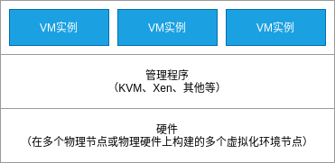
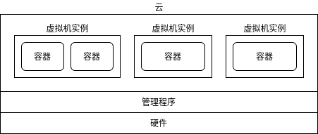
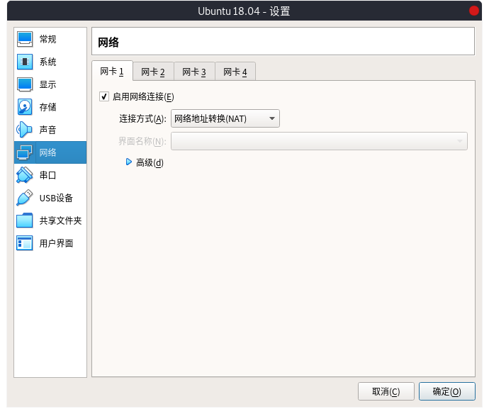
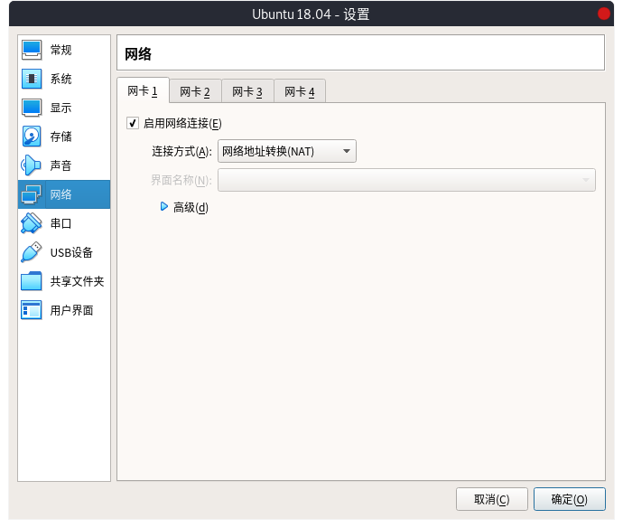

A-1 虚拟化概要¶
什么是虚拟化¶
虚拟化（Virtualization）是一种虚拟配置技术，它可以结构计算机系统（如硬件、服务器、存储和网络）的具有原始配置的独立资源，并以分割或合并的方式来实现。
结构 |
状态 |
说明 |
|---|---|---|
服务器 |
分割 |
拆分一台服务器以配置多台服务器 |
合并 |
将多台服务器配置为一台服务器 |
|
存储设备 |
分割 |
将一个磁盘拆分为多个独立的磁盘 |
合并 |
将多个磁盘多为一个磁盘 |
|
网络 |
分割 |
将一个LAN拆分为多个LAN |
合并 |
将多个网络设备整合为一个网络设备 |

结构❶
数据库服务和网站服务在运行在不同的裸金属物理服务器上。CPU和内存等资源的利用率较低会导致资源浪费，它们的处理能力也是如此。另外，还需要确保服务器的数量、物理空间位置、电源等等。
结构❷
数据库服务和网站服务软件可以安装在同一裸金属物理服务器中运行。但是，如果由于硬件故障而导致服务器宕机，则在该服务器中运行的所有服务（如本例中的数据库服务和网站服务）都将停止运行。解决此问题需要硬件冗余。另外，如果主机被恶意的第三方入侵，并夺取了root权限，则可能会对所有服务进行篡改等不正当行为。因此，与结构❶和结构❸等服务的分散结构相比，安全性较弱。
结构❸
在一个裸金属服务器中，每台服务器都使用虚拟化技术独立运行。运行操作系统的硬件平台在虚拟化管理程序（Hypervisor）上构建虚拟主机（Virtual Machine），并在其上运行 Guest OS。Guest OS可以为每台虚拟机提供不同的操作系统，并且可以在Guest OS上安装和使用服务软件，如数据库和网站。
基于Linux内核的虚拟化环境包括KVM和Xen。两者都在CentOS和Ubuntu标准网络存储库中提供。VirtualBox和VMware Workstation还可以用于Microsoft Windows、MacOS和Linux的虚拟环境。
管理程序¶
虚拟机管理程序是在其上运行虚拟机的软件。有两种典型类型的虚拟机管理程序：
类型 |
说明 |
|---|---|
裸金属主机 |
即虚拟机管理程序直接在硬件上运行，所有的OS都在该虚拟机管理程序上运行的方式。Xen就是这样。 |
主机类型 |
OS（主机操作系统）在硬件上运行，虚拟机管理程序在OS上运行。VMware Workstation 和 VirtualBox 采用这种类型。 |

注解
KVM是主机操作系统的一个内置虚拟机管理程序功能，但由于Guest OS运行在主机操作系统中的仿真器（QEMU）上，因此是裸金属主机类型和主机类型的中间方法。
云虚拟化¶
云的虚拟机管理程序可以在多台物理服务器的虚拟环境中运行多个虚拟机（VM）实例。虚拟机实例可以运行用户的应用程序。
云上的VM易于创建和删除，可通过根据工作负载情况手动或自动增加或减少VM数量来均衡多台物理服务器之间的处理能力。
Amazon 提供的AWS云（Amazon Web Services）早期使用Xen作为虚拟机管理程序，从2017年开始引入KVM。
Google 提供的云GCP（Google Cloud Platform）使用KVM作为虚拟机管理程序。
容器式虚拟化¶
容器虚拟化与主机操作系统共享相同的内核，在操作系统被隔离的容器的区域中有自己的地址空间，并且它还有自己的存储空间和网络名称空间。
它的特点是，与主机或虚拟机管理程序相比，他的体积更小，没有独立的内核的启动与停止，没有额外的服务启动与停止，并且容器启动与停止的速度更快。
在Google的Gmail到Youtube的视频检索，所有服务都是在容器中运行。
VM在虚拟机管理程序提供的虚拟环境中运行，而容器可以在主机操作系统中运行。
Docker公司开发的Docker容器被广泛用于容器的实现。
另外，将多个Docker容器部署到操作系统中，并使每个容器协同工作的名为Kubernetes的软件也在不断的普及开来，Kubernetes由Google开发并于2014年发布，现在由Cloud Native Computing Foundation(CNCF)管理。
虚拟化软件提供的功能¶
如上所述，虚拟化涉及多种资源，包括存储和网络。有两种方法可以利用虚拟化功能：
利用虚拟化软件提供的功能
利用虚拟化服务器提供的功能
以下是VMware Workstation提供的一些虚拟化功能的参考：以下是使用VMware Workstation创建的虚拟机的“设置”屏幕。


 

接下来，在“A-2 使用 KVM 构建虚拟环境”与“A-3 使用 VirtualBox 构建虚拟环境”章节中，我们将讨论如何使用虚拟化软件提供的功能来构建虚拟环境。